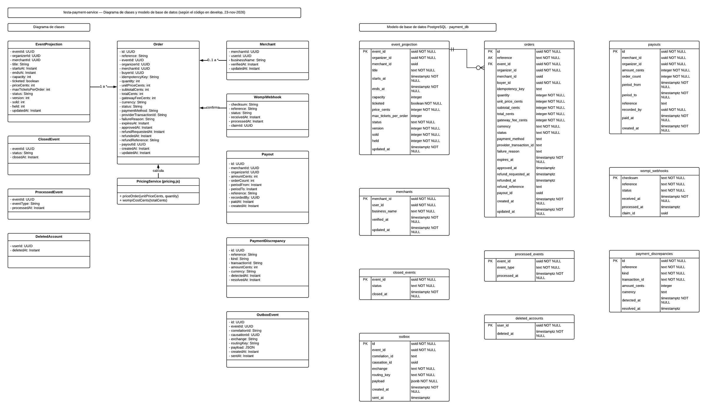

Node.js 20
Node.js 20- Express 5
- PostgreSQL
- RabbitMQ
- WWompi
Base: payment_db.
Tablas: event_projection, merchants, orders, payouts, wompi_webhooks, payment_discrepancies, closed_events, deleted_accounts, outbox, processed_events.
| Método |
Ruta |
Descripción |
GET |
/api/payments/events/{id}/quote |
Precio y comisión de Wompi, antes de comprar |
POST |
/api/payments/orders |
Crear una orden. Requiere Idempotency-Key |
GET |
/api/payments/orders/mine |
Mis órdenes |
GET |
/api/payments/orders/{id} |
Una orden |
GET |
/api/payments/merchants/me/summary |
Resumen de ventas y liquidaciones del comercio |
POST |
/webhooks/wompi |
Confirmación de Wompi. Valida la firma antes de procesar |
GET / POST |
/api/payments/admin/refunds, /api/payments/admin/payouts y acciones sobre órdenes |
Reembolsos y liquidaciones (admin) |
La simulación del pago (POST /api/payments/orders/{id}/simulate) solo responde si PAYMENTS_ALLOW_SIMULATION=true y el entorno no es producción. Sirve para probar el flujo completo sin la pasarela real.
- Publica:
order.created, order.approved, order.failed, order.expired, order.refund_requested, order.refunded, payout.recorded.
- Consume:
event.published, event.updated, event.cancelled, event.expired, merchant.verified, merchant.updated, account.deleted.
Diagramas
Componentes

Clases y modelo de datos

Decisiones
- Pasarela: solo Wompi; Festa no recibe datos de tarjeta.
- Sin comisión de Festa por boleta: el ingreso del modelo es la suscripción Festa Pro.
- Comisión de la pasarela: la paga el comercio: se descuenta de lo que recibe y el comprador paga solo el precio de la boleta (21 de noviembre de 2026).
- Base propia:
payment_db en Amazon RDS PostgreSQL.